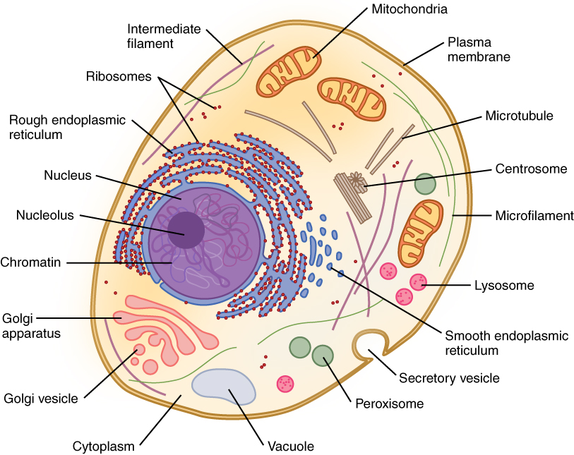
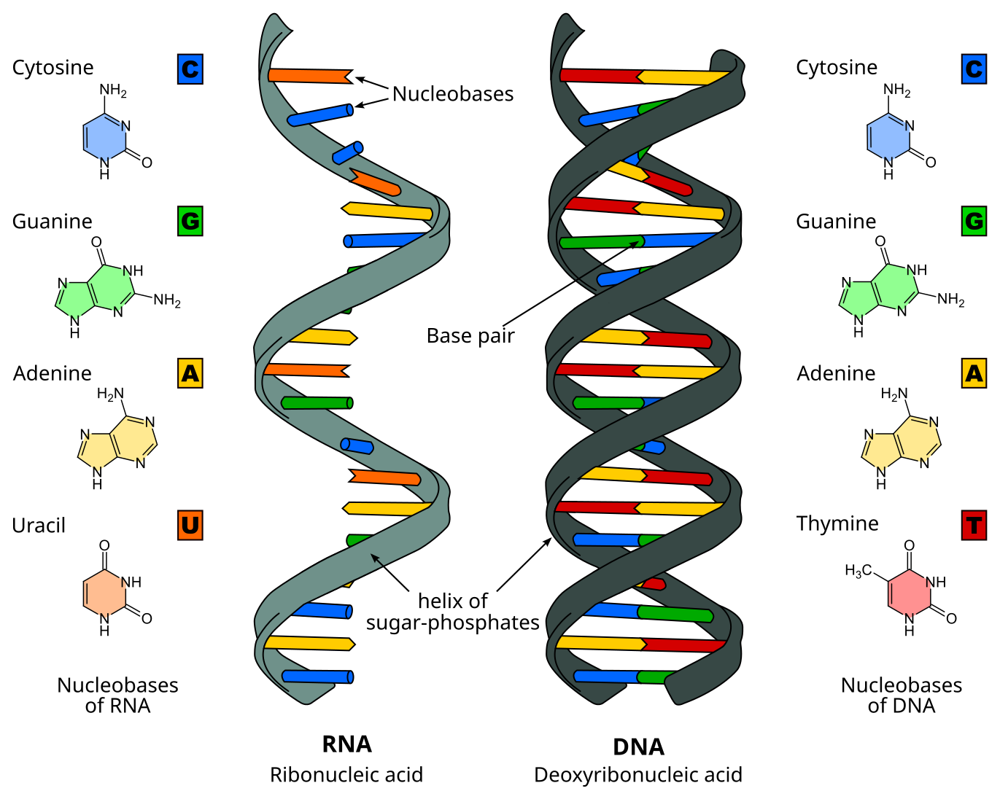
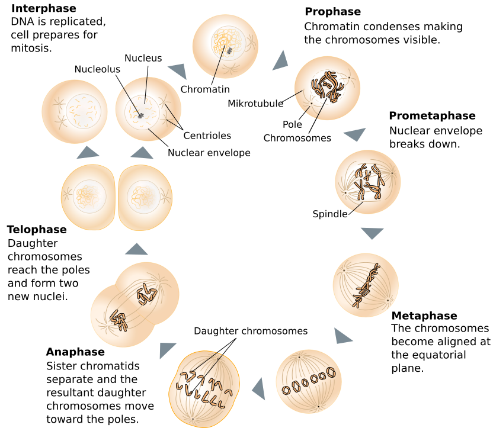
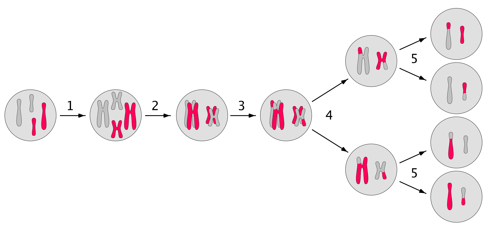
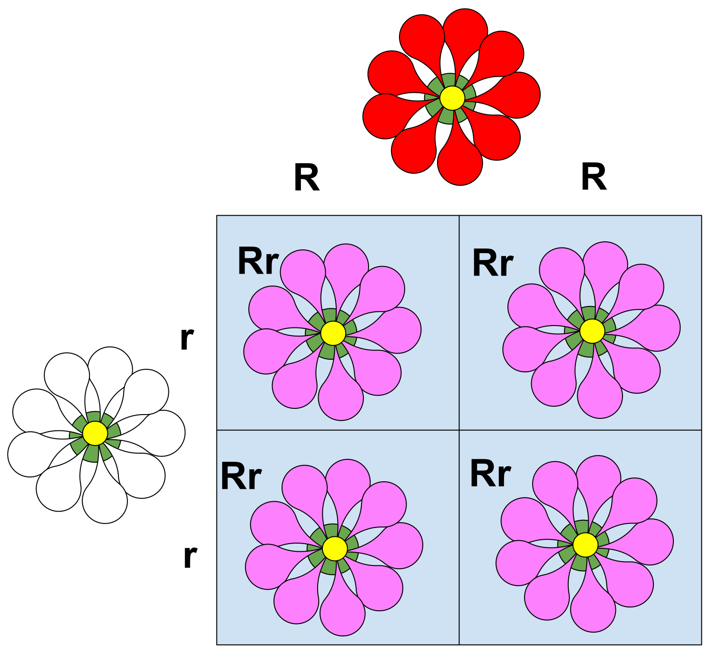

Genetic Fundamentals
DNA: The storage of biological information
Every living organism has cells, which are the smallest units of the organism and act differently in the body. For example, somatic cells are responsible for growth, formation of body structure, and repair of damaged tissue, while gamete cells (sex cells) are responsible for the reproductive process to pass on genetic material to offspring. Inside the cells, particularly in animals, plants, humans, and some fungi cells, there are two divisions: the nucleus and the cytoplasm. The cytoplasm contains several particles called organelles, such as mitochondria, Golgi apparatus, ribosomes, lysosomes and so on. However, as we are interested in genetics, particularly how an organism transmits genetic information to the offspring, here we are going to focus only on the nucleus.

{kind=link}
{kind=link}
The nucleus is the core of cells, containing all of the genetic information for development, metabolism, and behaviour of the organism. Within the nuclear membrane, there are threadlike bodies called chromosomes that organise nucleic acids, such as deoxyribonucleic acid (DNA) and ribonucleic acid (RNA). Chromosomes appear in pairs, in which one chromosome inherited from the male parent and one from the female parent. In addition, the number of chromosomes varies among species, which are used to characterise species. For example, humans typically have 23 chromosome pairs or 46 in total, while orangutans have 24 chromosome pairs.
Since we are focusing on biological substances that carry genetic information, we are going to focus only on DNA or RNA. The main differences between DNA and RNA lie in their helix structure, the type of constituent sugar, nitrogenous base, and their functions within the cell, as summarised in the table below.
| Characteristics | DNA | RNA |
|---|---|---|
| Main function | Stores and transmits permanent genetic information for a long time | Carries genetic messages from DNA to construct proteins |
| Structure | Double helix | Single helix |
| Pentose sugar | Deoxyribose (losing one oxygen atom in the 2nd chain) | Ribose |
| Nitrogenous base | Adenine (A), Guanine (G), Cytosine (C), Thymine (T) | Adenine (A), Guanine (G), Cytosine (C), Uracil (U) |
| Location | Nucleus | Cytoplasm, ribosomes |

{kind=link}
{kind=link}
Between nitrogenous bases are hydrogen bonds that always pair C with G and A with T. So there are always four combinations: A-T, T-A, G-C, C-G.
So, the question is, how do cells transmit their genetic information to build a new cell?
To answer that question, I am going to introduce a critical concept called the central dogma.
In simple terms, the central dogma describes how proteins, the building blocks of cells, are made from DNA. Not every stretch of DNA codes for a protein; only specific segments, called genes, are used for this purpose.
Indeed, the central dogma of molecular biology describes the conventional flow of genetic information from DNA to RNA and ultimately to protein. However, subsequent discoveries have revealed that the flow of biological information is more complex. For instance, RNA can serve as a template for DNA synthesis through a process known as reverse transcription, catalysed by the enzyme reverse transcriptase. More intriguingly, a recent study by Deng et al. (2026) revealed an unconventional mechanism in which a protein can act as a template for sequence-specific DNA synthesis. In this system, an antiphage reverse transcriptase called Drt3b synthesises alternating poly(AC) DNA without a nucleic acid template. Instead, specific amino acid residues within the protein’s active site directly control nucleotide selection, effectively allowing the protein itself to function as a template for DNA synthesis.
Consider what happens when the body needs a new muscle cell. A gene called MyoD1 switches on muscle-cell formation, prompting uncommitted stem cells to commit to becoming muscle cells. The MyoD1 gene is first transcribed into messenger RNA (mRNA), which is then translated into proteins that assemble the muscle tissue. This sounds like a straightforward chain of events, but in reality it unfolds through a complex web of interactions with many other genes.
In organisms that reproduce sexually, chromosomes from both parents mix through a process called crossing over, which is why every individual ends up with a genetic combination all their own. A child of a brown-eyed mother and a blue-eyed father, for example, may end up with an eye colour that blends or leans toward one parent’s trait. These observable, physical characteristics are called phenotypes.
Even though children inherit the same set of genes as their parents, the exact version of each gene, and the DNA sequence behind it, can differ. These gene variants are called alleles, while the specific combination of DNA sequences an individual carries is called their genotype.
Cell division
An organism grows when its cells divide, and it replaces many damaged or worn-out cells in the same way. Each division must distribute DNA to the new daughter cells. This raises two related questions: how can a growing body maintain its chromosome number, and how can offspring inherit chromosomes from two parents without doubling that number in every generation? Mitosis and meiosis solve these different problems.
For the examples below, consider an organism with two chromosome sets, one inherited from each parent. Such a cell is diploid, written as \(2n\), whereas a haploid cell has one set, written as \(n\). The members of a homologous chromosome pair carry corresponding genes at the same positions, or loci, but may carry different alleles. Before either mitosis or meiosis, DNA replication produces two copies of each chromosome, called sister chromatids, joined at the centromere. This doubles the amount of DNA without changing the number of chromosome sets: a replicated diploid cell is still diploid.
Mitosis
Mitosis divides the nucleus so that each daughter nucleus receives one copy of every chromosome. In a dividing skin cell, for example, it preserves the chromosome complement needed by the replacement cells. DNA replication occurs beforehand, during the S phase of interphase. Provided replication and chromosome separation proceed without errors, the daughter cells inherit the same nuclear genetic information as the parent cell. Mutations can introduce differences, so genetic identity is the expected outcome rather than an absolute guarantee. The NHGRI description of mitosis summarises this role in growth and cell replacement.
During prophase, chromosomes condense and the mitotic spindle begins to form. As the nuclear envelope breaks down in prometaphase, spindle microtubules attach to structures called kinetochores on the chromosomes. At metaphase, the replicated chromosomes align near the centre of the cell, with sister chromatids attached towards opposite poles. This arrangement allows anaphase to separate the sisters so that each pole receives a complete chromosome set. During telophase, nuclear envelopes form around the separated sets and the chromosomes begin to decondense.
Division of the cytoplasm, called cytokinesis, usually overlaps with the end of mitosis and completes the formation of two cells. It is a separate process from nuclear division. For a diploid parent cell, the usual outcome is two diploid daughter cells: each retains both members of every homologous pair. Mitosis therefore maintains the chromosome number across successive divisions during growth.
In Figure 3, follow the arrows from interphase through chromosome alignment and separation. The two daughter cells return to interphase after nuclear division and cytokinesis.

{kind=link}
{kind=link}
Meiosis
In animals, meiosis produces the haploid cells that develop into gametes. It involves one round of DNA replication followed by two divisions. During meiosis I, homologous chromosomes pair and then separate, reducing the number of chromosome sets from two to one. During meiosis II, sister chromatids separate, without another round of DNA replication between the divisions. The distinction is in what separates: homologues first, then sister chromatids.
The usual description gives four haploid products from one diploid cell, but these do not always become four functional gametes. In mammalian egg formation, unequal cytoplasmic divisions produce one large egg and small polar bodies. In plants, meiosis produces spores; gametes form later in the haploid phase of the life cycle. These differences in development share the same chromosome-reduction process described in the NHGRI overview of meiosis.
Meiosis also changes which alleles travel together. During prophase I, crossing over exchanges corresponding DNA segments between non-sister chromatids of homologous chromosomes. A chromosome passed to an offspring can therefore contain segments derived from both of that parent’s parents. This recombination rearranges existing alleles into new combinations; mutation is the source of new alleles. The NHGRI explanation of crossing over describes how this exchange contributes to variation among gametes.
At metaphase I, each homologous pair can orient towards either pole independently of the other pairs. This independent assortment mixes chromosomes of maternal and paternal origin. In a simple example with two chromosome pairs, assortment alone permits four combinations of whole chromosomes in gametes across many meioses. Crossing over adds further possibilities within each chromosome.
Fertilisation occurs after meiosis, when two haploid gametes unite to form a diploid zygote. Which gametes combine contributes additional variation among offspring. Thus, meiosis reduces the chromosome number and reshuffles inherited DNA, while fertilisation restores the diploid number. Together these processes explain why siblings can inherit different combinations of alleles from the same parents.
The numbered steps in Figure 4 separate replication (1), pairing of homologues (2), crossing over (3), meiosis I (4), and meiosis II (5). The two chromosome lengths represent two different homologous pairs. Notice that the first division separates homologues while the second separates sister chromatids.

{kind=link}
{kind=link}
Mendelian inheritance
Gregor Mendel’s experiments with pea plants showed that inheritance follows predictable patterns when particular traits are tracked across generations. We can now connect those patterns to the behaviour of chromosomes during meiosis. At an autosomal locus in a diploid organism, an individual usually carries two alleles, one from each parent. An individual with matching alleles is homozygous at that locus; one with different alleles is heterozygous. These terms describe a specific locus, so an individual can be homozygous at one locus and heterozygous at another.
The law of segregation states that the two alleles separate during gamete formation. For a heterozygote \(Pp\), ordinary Mendelian segregation gives a probability of one-half for a gamete to receive \(P\) and one-half to receive \(p\). Fertilisation pairs one allele from each parent again. This transmission of discrete alleles explains how a trait absent from the parents’ appearance can reappear in their offspring.
The law of independent assortment concerns different loci. For example, an individual \(AaBb\) produces \(AB\), \(Ab\), \(aB\), and \(ab\) gametes in equal expected proportions when the loci assort independently. Loci on different chromosomes usually satisfy this condition. Nearby loci on the same chromosome are linked and tend to pass together, although crossing over can separate them. Consequently, segregation at a single locus does not imply independence between all loci.
Dominance describes how the two alleles in a heterozygote affect the phenotype. It does not change their probabilities of transmission. Mendel’s familiar dominant and recessive traits illustrate one pattern of gene action, but many traits have more complex genetic causes, as outlined in the NHGRI account of Mendel’s work.
Example: Monohybrid cross
Suppose a single locus determines whether flowers are purple or white, and the purple allele (\(P\)) is completely dominant over the white allele (\(p\)). Crossing two heterozygous plants can be written as:
\(Pp \times Pp\)
Each parent produces \(P\) and \(p\) gametes in equal expected proportions. In the Punnett square below, the row and column identify the alleles contributed by the two parents. Each intersection has probability \(1/2 \times 1/2 = 1/4\) under random union of these gametes.
| Gamete from parent 1 | \(P\) from parent 2 | \(p\) from parent 2 |
|---|---|---|
| \(P\) | \(PP\) | \(Pp\) |
| \(p\) | \(Pp\) | \(pp\) |
The expected genotypic ratio is \(1\,PP : 2\,Pp : 1\,pp\). Two different gamete combinations produce \(Pp\), which explains its probability of one-half. Because \(PP\) and \(Pp\) both produce purple flowers, the expected phenotypic ratio is \(3\text{ purple} : 1\text{ white}\).
These ratios are probabilities across offspring, not a requirement that every four offspring contain exactly three purple plants and one white plant. Small families can depart substantially from the expected ratio by chance. The prediction also assumes equal allele transmission, fertilisation success, and survival of the genotypes, with flower colour following the stated dominance pattern.
Gene action
Segregation tells us which alleles an offspring can inherit. Gene action describes how those alleles contribute to its phenotype. A gene may encode an enzyme involved in pigment production, for example, so a change in enzyme activity can alter flower colour. The visible outcome depends on the other allele at that locus, other genes in the pathway, and the conditions in which the organism develops.
Complete dominance
In complete dominance, the heterozygote has the same phenotype as one of the homozygotes for the trait being considered. In the example above, \(PP\) and \(Pp\) are both purple. One possible biochemical explanation is that a single functional copy produces enough enzyme for the purple phenotype. This is an illustrative mechanism; dominance can arise in other ways and depends on what phenotype is measured.
The recessive allele remains present in a heterozygote and can pass to its offspring. A dominant allele is not necessarily more common in the population or more beneficial to the organism. Dominance describes the heterozygous phenotype, whereas allele frequency and effects on survival or reproduction are separate properties.
Incomplete dominance
In incomplete dominance, the heterozygous phenotype lies between the two homozygous phenotypes. Consider a hypothetical flower-colour locus with alleles \(C^R\) and \(C^W\): \(C^R C^R\) plants have red flowers, \(C^W C^W\) plants have white flowers, and \(C^R C^W\) plants have pink flowers. A possible explanation is that the heterozygote produces less pigment than the red homozygote, enough to give an intermediate colour.
Crossing two pink plants still gives a genotypic ratio of \(1:2:1\), but the phenotypic ratio is now also \(1\text{ red} : 2\text{ pink} : 1\text{ white}\). The alleles remain distinct and segregate normally; they have not permanently blended. Red and white flowers can therefore reappear among the offspring of pink parents.
The cross in Figure 5 shows the preceding generation: a red homozygote crossed with a white homozygote produces only pink heterozygotes. The diagram uses \(R\) and \(r\) for the alleles called \(C^R\) and \(C^W\) above; the capital letter does not imply complete dominance in this example.

{kind=link}
{kind=link}
Codominance
In codominance, the heterozygote shows distinguishable contributions from both alleles. In the standard model of human ABO blood groups, \(I^A\) and \(I^B\) encode enzymes that produce different carbohydrate antigens on red blood cells. An individual with genotype \(I^A I^B\) expresses both A and B antigens and has blood type AB. These are two detectable products, rather than an intermediate antigen. The NCBI record for the ABO gene describes the enzymes responsible for these antigen differences.
The distinction from incomplete dominance concerns the phenotype used to classify the heterozygote. With incomplete dominance, we observe an intermediate value such as pigment intensity. With codominance, we can identify both allelic contributions separately. Both patterns are compatible with Mendelian segregation.
Multiple alleles
A locus can have many alleles across a population. At an ordinary autosomal locus, a diploid individual still carries only two allele copies, which may be identical or different. Thus, the number of alleles in the population and the number carried by one individual answer different questions.
The standard ABO example uses three main allele categories: \(I^A\), \(I^B\), and \(i\). Both \(I^A\) and \(I^B\) are dominant over \(i\) for blood group, and they are codominant with each other. This gives six unordered genotypes and four usual blood groups: \(I^A I^A\) or \(I^A i\) gives A, \(I^B I^B\) or \(I^B i\) gives B, \(I^A I^B\) gives AB, and \(ii\) gives O. These categories simplify a locus that contains additional sequence variants, as described in the NCBI chapter on the ABO blood group.
Epistasis
Epistasis occurs when the phenotypic effect of a genotype at one locus depends on the genotype at another locus. This can happen when the products of different genes participate in the same pathway. Blocking an early step may prevent a later step from affecting the phenotype, even when the gene for that later step functions normally. The NHGRI definition of epistasis describes this modification of one gene’s effect by other genes.
Consider a hypothetical pigment pathway in which at least one \(A\) allele is required to make a precursor. At a second locus, \(B\) allows conversion of that precursor to a dark pigment, while \(bb\) leaves it pale. An \(aa\) individual cannot make the precursor, so it is unpigmented regardless of its \(B\) genotype. Here the \(aa\) genotype masks the distinction between dark and pale. Each locus can still segregate in Mendelian proportions, but combining genotypes into visible categories changes the phenotypic ratios. Dominance concerns alleles at one locus; this example of epistasis concerns two loci.
Pleiotropy
Pleiotropy means that variation in one gene influences more than one trait. A gene product may function in several tissues or regulate a process with several downstream consequences. For an illustrative example, a change in a growth regulator could affect both body size and the timing of maturity. These effects need not be equally large or beneficial for every trait.
In breeding, a pleiotropic allele can help explain why selecting for one trait also changes another. However, correlated traits alone do not prove pleiotropy: separate genes that are closely linked can also be inherited together. Pleiotropy also differs from polygenic inheritance, in which many genes contribute to one trait. A trait can be polygenic while some of its contributing genes also have pleiotropic effects.
Environmental effects
The same genotype can produce different phenotypes under different conditions. Nutrition can limit growth, for example, even when an organism carries alleles associated with larger body size. Temperature, light, and other exposures can alter development or gene expression without changing the inherited DNA sequence. A difference in phenotype therefore does not, by itself, establish a genetic difference.
An environmental effect becomes a genotype-by-environment interaction when genotypes respond differently to the environmental change. Consider a hypothetical comparison of two plant genotypes: one grows more than the other under ample water, but loses that advantage during drought. Their response to water availability differs. If drought reduced both by the same amount on the measurement scale, that would be an environmental effect without an interaction. The NHGRI explanation of gene-environment interaction describes this dependence of genetic effects on environmental exposure.
For a measured quantitative trait, one way to express these contributions is the statistical model
\[y = \mu + G + E + G\!\times\!E + \varepsilon.\]
Here, \(y\) is the observed trait value, \(\mu\) is the overall mean, \(G\) is the genotypic effect, \(E\) is the environmental effect, and \(G\!\times\!E\) denotes their interaction. The residual \(\varepsilon\) captures variation not represented by those terms, including measurement error. This is a model for a specified population, set of environments, and measurement scale. The interaction symbol names a model component; it does not mean that a DNA sequence is literally multiplied by an environment.
These distinctions matter when comparing animals, plants, or breeding lines. A higher observed value may reflect inherited differences, better growing conditions, or both. Replication across relevant environments helps separate those contributions and assess whether a genetic advantage persists under the conditions where selection will be used.
Exercises
- A cell uses a gene to make a protein. Describe the information flow from DNA to protein, and identify the base present in RNA where DNA has thymine.
The gene’s DNA sequence is transcribed into messenger RNA, and the mRNA is translated to make a protein. RNA uses uracil (U) where DNA uses thymine (T). Only particular DNA segments are genes used in this information flow; not every DNA sequence codes for a protein.
- A diploid cell has replicated its chromosomes. Compare the usual products of mitosis and meiosis, including which chromosome structures separate in each process.
Mitosis normally produces two diploid daughter cells and separates sister chromatids, preserving the chromosome number. Meiosis follows one replication with two divisions: meiosis I separates homologous chromosomes and reduces the chromosome-set number, while meiosis II separates sister chromatids. Its usual schematic outcome is four haploid products.
- Explain how crossing over, independent assortment, and fertilisation can make siblings genetically different. Which of these processes creates a new allele?
Crossing over rearranges parental chromosome segments, independent assortment mixes whole chromosomes of maternal and paternal origin into gametes, and fertilisation combines one gamete from each parent. These processes reshuffle alleles that already exist. Mutation, rather than any of the three processes, is the source of a new allele.
- For the stated complete-dominance cross \(Pp \times Pp\), calculate the expected genotype probabilities and the expected purple-to-white phenotype ratio. Why need not a family of four offspring have exactly that ratio?
The expected genotype probabilities are \(P(PP)=1/4\), \(P(Pp)=1/2\), and \(P(pp)=1/4\). Because \(PP\) and \(Pp\) are purple, the expected phenotype ratio is \(3\) purple to \(1\) white. These are probabilities across repeated crosses; random variation means one family of four need not have exactly three purple and one white offspring.
- Two heterozygous flowers have the intermediate pink phenotype between red and white. What pattern of gene action does this illustrate, and how does it differ from codominance? Also state how many allele copies one diploid individual carries at a locus with multiple alleles in the population.
This is incomplete dominance: the heterozygote has an intermediate phenotype. In codominance, both allelic contributions can be distinguished in the heterozygote, as with the A and B antigens in blood type AB. A diploid individual still carries only two allele copies at one autosomal locus, even when many alleles occur in the population.
- Distinguish epistasis, pleiotropy, and genotype-by-environment interaction. In the article’s examples, what would show that a difference between two plants is an environmental effect without a genotype-by-environment interaction?
Epistasis means that a genotype at one locus changes the phenotypic effect of a genotype at another locus. Pleiotropy means that variation in one gene influences more than one trait. A genotype-by-environment interaction occurs when genotypes respond differently to an environmental change. If drought reduced both plant genotypes by the same amount on the measurement scale, it would be an environmental effect without that interaction.